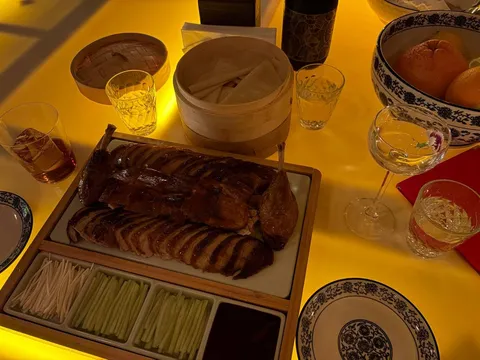
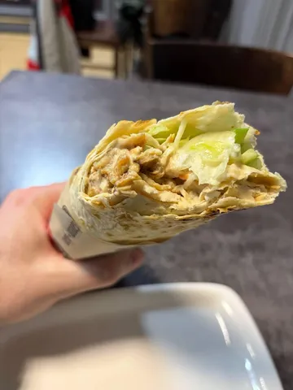

На этой неделе в наших кулинарных путешествиях была пауза. Во-первых, нужно было передохнуть на подножном корму. А во-вторых, меня все равно полнедели не было дома из-за командировки. Но без гастрономического контента я вас, тем не менее, не оставлю, посему несколько хайлайтов недели.
Рамён по-холостяцки. Это когда ты в дошик докидываешь все, что нашел в холодильнике. В нашем случае, правда, похитрее. Сварили куриный бульон на одной куриной грудке из морозилки, в нем же далее варится примерно любая лашпа быстрого приготовления. Грудку из бульона нужно нарезать ломтиками, обжарить до хрустящей корочки и вернуть в кастрюльку. Туда же нарезку копченой утки (или что-то еще копченое, что есть в холодосе), маринованые шампиньоны из баночки (ну или что в шкафчике найдется), половинки вареного яйца (накануне пасхи этого добра было в избытке), свежий зеленый лук, приправу от дошика и соус кимчи. Вуаля, минут 20 и все готово.
Шаверма (угадайте, где я был в командировке). Обнаружена классная шаурмичная на Суворовском 43-45 - "Шеф-шаверма". Большая, сочная, соусы вкусные, курочка нежная, зал приличный. Вкуснее сетевых заведений, нарядней большинства подвалов. Стоит заглянуть.
Очень приятное, вкусное и атмосферное место - "Пища династии Минь" на Короленко 14. Специализируются на утке по-пекински. И не зря - она у них прекрасна. Юра, когда меня туда звал, настаивал, что нужно взять с собой еще пару человек, потому что порция блюда под названием "Целая" рассчитана примерно на четверых. Успели найти только третьего, но он должен был подъехать чуть позже. Не успел. Но не потому, что утки было мало, а потому что завис на тренировке. Мы с Юрой героически запитонили эту целую утку. Было сложно, но очень вкусно.
А Денис нас нагнал уже в "Ruc's Heaven" на 9-й Советской- отличное новое заведение от Perfect bars team в каталонской стилистике. У них рекомендую чак-ролл, картофельные шарики с сыром и, конечно, авторские коктейли, сангрию и сидровый вермут (но чур не злоупотреблять).
Такой вот трип Москва-Токио-Питер-Пекин-Барселона-Москва прямыми рейсами без пересадок.

